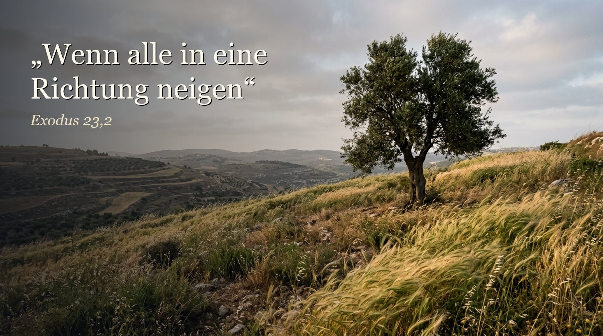

25. November 2026 · Psalm 119,45
Im Weiten gehen
Wer sich eingeengt fühlt, sehnt sich nach Raum. Psalm 119,45 nennt einen überraschenden Weg dorthin: Weite entsteht nicht dadurch, dass Gottes Weisung wegfällt, sondern dadurch, dass man sie ernsthaft sucht.

24. November 2026 · Exodus 23,2
Wenn alle in eine Richtung neigen
Eine Menge kann Halt geben – und sie kann uns mitreißen. Exodus 23,2 warnt davor, dem Recht die Richtung der Mehrheit zu geben. Das hebräische Wort „viele“ und das Bild des Neigens zeigen, worauf es ankommt.